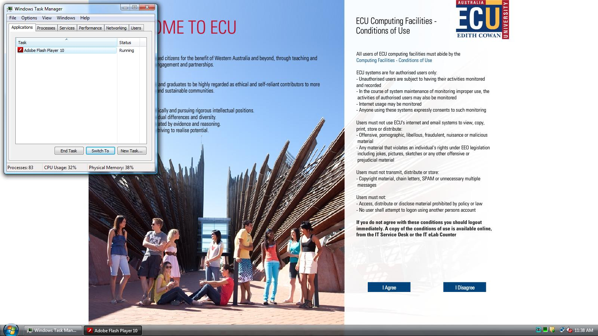
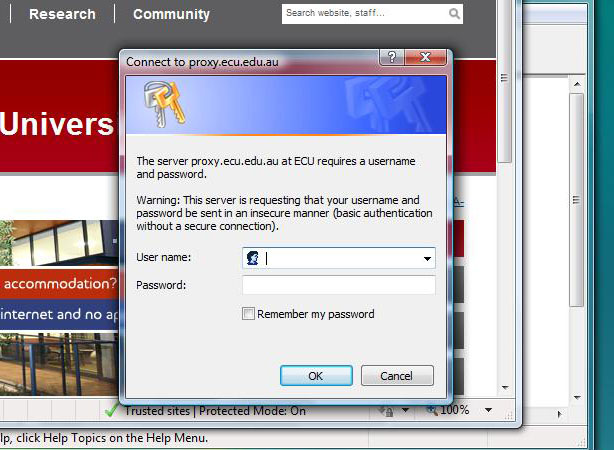
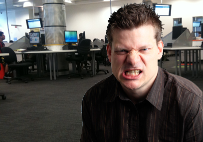

Vi her i redaksjonen har på god autoritet at det er flere veldig tekniske mennesker som leser denne bloggen (dere vet hvem dere er). Jeg tenkte derfor det var passende å skifte fra tilfeldige ablegøyer i et annet land, til en litt mer teknisk artikkel.
For å forstå utgangspunktet i denne artikkelen må vi snu klokken tilbake til Norge. I tiden før vi dro hadde vi (som flere vet) veldig mange problemer med å få alt i orden så vi kunne reise. Dette var både av en teknisk og organisatorisk natur. Dette førte til at jeg (Christer, for de som ikke klarte å lese seg frem til det) kom med følgende evigvarende sitat: Det er en grunn til at det ikke kommer noen store teknologiske fremskritt fra Australia.
Etter at vi fikk løst alle problemene, og faktisk kommet hit har det virkelig åpenbart seg hvor sant dette var. Australia er et land hvor teknologien, spesielt for mobiltelefon, Internett og data er fem år tilbake i tid. Denne oppdateringen vil bare ta for seg de to siste temaene, og dessverre litt kort. Heldigvis vil det komme flere i tiden fremover.
Vi starter med det aller mest irriterende; Internett. Det er så usannsynlig tregt at vi til tider har fått alvorlige anfall og utbrudd. Dekningen av trådløst nettverk på skolen, spesielt biblioteket er utrolig dårlig. Biblioteket har fire etasjer, og i vær etasje er historien den samme; du får bare trådløst hvis du er i midten av bygningen. De har nettverkspunkt overalt, men de fleste er ikke patchet. De som er patchet er en tjeneste de tilbyr for studentene, men jeg har faktisk bare sett et eller to punkter som faktisk fungerer. Skulle du finne et av de to, må du sette opp en VPN kobling mot skolen for å kunne benytte deg av proxyen som gir deg tilgang til verden.
Hjemme er ikke situasjonen noe bedre. Nettet er tregt og selv om vi betaler $190 (ca. 1080 kr. pr. dagens kurs) i uken for husleie, er ikke Internett inkludert. Internett er heller ei billig, og er lagt opp på en spesielt Australsk måte (les: uintelligent). Du må betale for en tidsperiode forstålig nok, men også i tillegg betale for båndbredde. Et eksempel; vi betaler $30 for en måneds bruk, og 10GB med data. Skulle vi gå over dette må vi kjøpe mer data, det vi ikke bruker blir overført til neste måned. Systemet er også sånn at opplasting også spiser av datamengden. Det er heller ikke gratis trafikk mot skolesider, skoleportalen, eller Blackboard som er skolens svar på Fronter.
Datalabbene er ikke noe å rope spesielt høyt hurra for. Det er utstyr av en «nyere» tid; Dell maskiner med Vista. Problemet er at de er dynket med alskens tull. Det mest irriterende er at hver gang du logger deg på, får du opp en avtale du må trykke agree/not agree på. Denne er laget i Flash og bruker lang tid på å komme opp. Så man kan starte alle slags andre programmer og den blir liggende i bakgrunnen å sture. Trykker du på disagree blir du logget ut av maskinen. Trykker på feil knapp som en tabbe har man kastet bort de ti minuttene det tok å logge på.

Hver gang man åpner en ny sesjon i browsern må man også logge på skolens proxy ved hjelp av standard ukryptert HTTP autentisering. Dette var spesielt morsomt når Jon Arne satt i en labtime og de måtte sniffe passord med Wireshark. Dette skjer selvfølgelig også hver gang, så hvis du lukker Internet Explorer så kommer boksen opp igjen neste gang.

Hvis opplevelsen her nede har lært meg noe, er det hvor god jobb IT-Tjenesten på Høgskolen I Gjøvik gjør. IT-Avdelingen her trenger virkelig en studietur opp dit for å lære hvordan det gjøres.
Så med det i tankene har jeg valgt å ta et veldig dårlig bilde av den største datalabben, og kjørt det gjennom to minutter med Photoshop. Det illustrerer teknologi, lite gjennomført arbeid, HiGs IT-tjeneste og generell frustrasjon.

I hate it when that happens..
æ tar nå detta med ei klypa salt i såret..